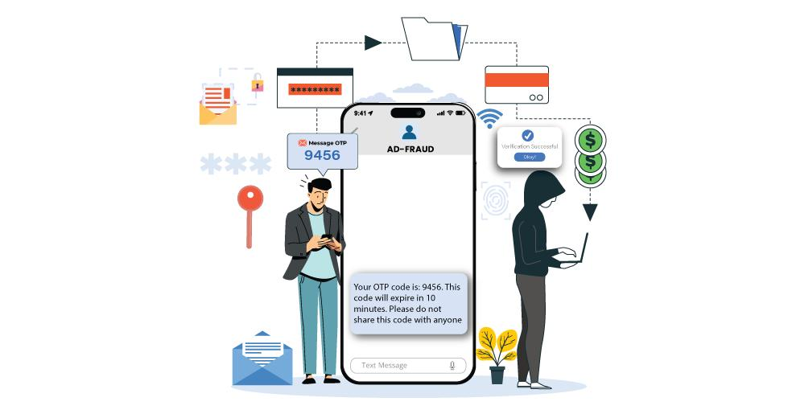

Cybercriminals use social engineering to trick people into disclosing sensitive information or taking actions that jeopardize their security.
Rather than attacking computers directly, attackers take advantage of human emotions like fear, trust, curiosity, and urgency.
Consider this: it is often easier to trick someone into handling over a key than to break the lock.
🎭 Common social engineering tactics
Impersonation--attackers pose as trusted individuals, such as bank employees, IT support staff, or government officials.
Urgency--attackers force victims to act quickly and without thinking carefully.
Fear--threats of account suspension, financial loss, or security breaches are used to cause panic.
Curiosity--intriguing messages entice users to click links or open attachments.
Trust Exploitation: Attackers gain confidence by pretending to be familiar or trustworthy.
📞 Example scenario:

Imagine getting a call from someone claiming to be from your bank.
They say:
➡"Your account has been compromised. To secure it immediately, please enter the OTP sent to your phone."
The caller sounds professional and conveys a sense a urgency.
If you share the OTP, the attacker could gain access to your account.
🛡 How to Protect yourself
Check someone's identity before sharing information.
Do not share passwords, OTPs, or PINs.
Be cautious of urgent or threatening messages.
Exercise caution before clicking links or opening attachments.
Contact organizations directly, using their official contact information.
🔒 Key Takeaway
"Social engineering attacks focus on human behaviour rather than technology. Staying alert and thinking before acting can help you avoid many cyber threats."